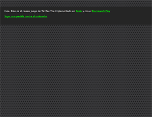
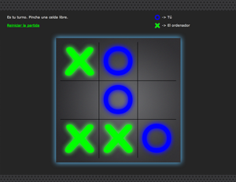
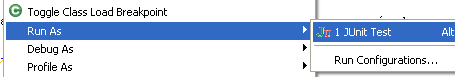
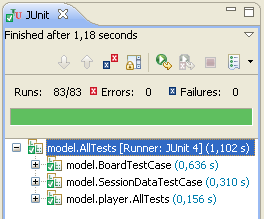

|  |
|  |
|  |  |
| Versión | Comentarios |
| 1.0 |
- Fecha: 2/07/2012 - Toda la funcionalidad: jugar desde el navegador - Ejecución de test cases en Eclipse |
| 2.0 |
- Fecha: 20/07/2012 - La capa de presentación se ha reimplementado usando CSS y HTML. La maquetación se hizon con Dreamweaver CS4. |